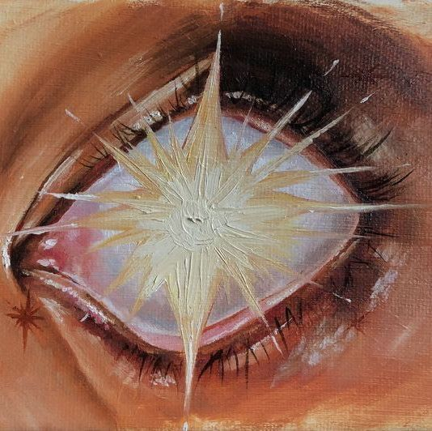

Step into the world of hidden knowledge and soul-deep wisdom. Our collection of articles explores the many layers of the soul's journey, from ancient teachings on reincarnation to modern-day accounts of spiritual encounters. Here, you’ll find insights, research, and stories that illuminate the mysteries of life, death, and the realms between. Whether you're a curious seeker or a seasoned traveler of the spirit, these writings invite you to explore, reflect, and connect with the unseen world around us.